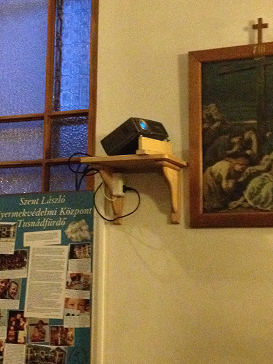
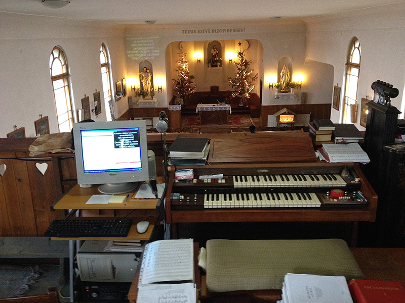
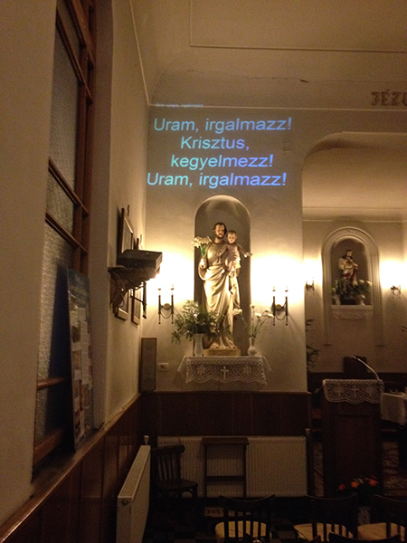
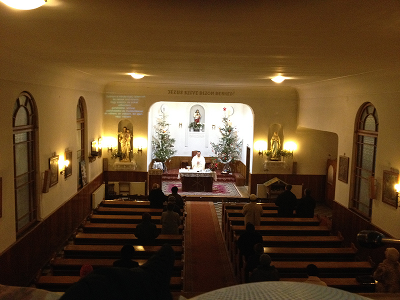

Construită în urmă cu 80 de ani ca mică biserică de periferie, în afara orașului, a ajuns astăzi să fie aproape în centrul civic ca urmare a expansiunii urbane. Înconjurată de blocuri și drumuri, ce au redus mereu din spațiul ei de odinioară, a ajuns astăzi ca o biserică de cartier ce trăiește în mijlocul comunității. Mereu neîncăpătoare, mica bisericuță de altădată, oferă astăzi loc de rugăciune atât pentru enoriașii de limbă maghiară cât și pentru cei de limbă română. Din cauza numărului mare de credincioși, adesea, slujbele sunt ”în schimburi”, oficiate în limbile participanților, adică română sau maghiară, iar când sunt mixte, părțile principale sunt repetate în ambele limbi iar cântecele adesea sunt în latină, ocazii cu care bisericuța noastră devine neîncăpătoare.
Și ca o dovadă că: ”...la început a fost cuvântul...”am adus în biserica noastră ”cuvântul afișat” atât al rugaciunilor cât și al cântecelor bisericești. Grație programului informatic ”DIATÁR” pe care l-am preluat de pe internet și dezvoltat prin adăugarea textelor în limba română, ”cuvântul rugăciunii și al cântecului bisericesc” este afișat în cadrul slujbelor, în ambele limbi. Am adaugat și forma în engleză a ritualului scurt al slujbei și ar mai fi nevoie de cel în limba germană, care rămâne ca proiect de viitor dacă nevoia va impune. Oricum dezvoltarea programului prin introducerea textelor noi în program a însemnat o munca susținută din februarie până în august 2013. Astfel, toți cei ce vin la slujbă, au posibilitatea de a participa activ, de a răspunde și cânta în timpul slujbei conform ritualului romano-catolic indiferent că sunt buni cunoscători ai ritului sau începători în ale lui, căci conform dictonului latin: ”bis orat qui cantat” – se roagă de două ori cel ce cântă și astfel pot dobândi harurile sfinte, urmând textele afișate pe perete.
Ca într-o bisericuță mică, cu preoți tineri și buget mic, a fost destul de greu să apelăm la soluții profesionale de vârf ale tehnicii de proiecție.
Și toate astea pe cheltuiala proprie din dorința de a face ca sistemul de proiecție să fie funcțional.
 Suportul vechi al proiectorului de diapozitive ce stătea nefolosit pe peretele din dreapta al bisericii l-am mutat pe peretele din stânga cu ajutorul unor meseriași inimoși și am așezat pe el un proiector ce apartine parohiei și care din cauza multor ore de functionare are lampa foarte slăbita.
 Am obținut un calculator vechi de la un profesor de limba si literatura romană, pe gratis, pe care l-am modernizat (up gradat) până la limita suportată de placa de bază, am luat de acasa boxele active, am mai cumpărat o masă nouă de calculator care să încapă în spațiul redus de lângă orgă.
Prin bunăvoința societății caritabile ce desfășoară activități de catering si evenimente festive de pe lângă biserică, am obținut și cablul VGA de legătură între calculatorul montat la balcon in cor, lângă orga si proiectorul montat pe perete aproape de altarul Sf. Iosif.
 Proiectarea o facem direct pe perete, deasupra statuii Sf. Iosif fără să aducem vreo atingere acestuia, însă, din cauza poziției proiectorului, imaginea este proiectata nu numai de jos în sus ci și de la stânga spre dreapta. Toate acestea afecteaza forma imginii și dupa toate corecțiile aplicate pentru reducerea imaginilor trapezoidale, imaginea tot mai rămâne un pic deformată. Este și motivul pentru care, atunci când luminozitatea în biserică este mică, proiectarea textelor se face cu fonturi albe pe fond negru căci astfel, nu se vede pe perete conturul deformat al imaginii albe proiectate. Când vom ieși din iarnă și ziua se va mări iar luminozitatea din biserică va crește va fi o adevărată problemă vizualizarea textelor, insă până atunci ne concentrăm pe ce avem până la limita permisă de tehnica noastră.
 Vom vedea dacă în viitor sistemul de proiecție devine cu adevărat o necesitate și dacă da, atunci probabil, se vor găsi și alte soluții tehnice care să fie ”viabile” și mai performante decât cel de acum. Din august anul trecut și până acum am testat si pus în funcțiune sistemul de proiecție bazat pe programul informatic ”Diatár”, la început doar ca stație locală, ulterior și cu proiecție pe perete și pot spune că sitemul este funcțional, bine gândit, ușor de condus și controlat. Și în cazul acestui sistem, ca și în cazul tuturor acțiunilor ce trebuiesc pregătite din timp, succesul depinde de temeinicia pregătirii textelor de proiectat înainte de slujbă.
Munca pregătită din vreme se bucură de succes și recunoaștere, în schimb nepregătirea ei duce la bâlbâieli și greșeli nedorite ce sunt de natură să reducă încrederea în utilitatea și necesitatea sistemului.
Anul trecut de Crăciun a murit fostul nostru cantor, cel cu care am inițiat și discutat doar la nivel de intenție realizarea sistemului de proiecție, iar de anul acesta, din luna mai, avem o noua cantoriță care încearcă să preia din mers atribuțiile ei și care contribuie la desfășurarea normală a slujbelor. Din acest motiv, ea înca nu se ocupă de calculator și de sistemul de proiecție, fiind ajutată de mine de la calculatorul de control al sistemului de proiecție așezat lângă orgă, în balconul corului.
Rezultatele se văd deja. Enoriașii se implică în ritualul slujbelor cu mai multă încredere, cântă cu mai mare dezinvoltură, cântă cântecele până la ultimul vers și nu numai primele versuri ca și până acum iar această participare deplină le dă o stare de bucurie și mulțumire. Raspunsurile enoriașilor sunt mai prezente, mai prompte, mai vibrante iar comunitatea prin asta este mai vie și unită. Slujba este mai frumoasă când participă toți prin răspunsuri și cânt iar bucuria și rugăciunea ajung mai ușor la suflet și cer.
Noutatea în 2014, față de prezentarea anterioară constă în faptul că, odată cu zugravirea interioară a bisericii și schimbarea ferestrelor laterale, au fost comandate dispoyitive noi pentru proiecție și anume: proiector nou, ecran nou și suport nou pentru proiector. Proiectorul este fixat acum de tavan și proiectează pe ecranul prins pe perete. Toate sunt noi și de calitate astfelk imagininea proiectată este mult mai liyibilă. Cablurile au fost poyate prin pod până în balconul corului unde este instalat calculatorul. Chiar și senzorul telecomenzii a fost prelungit cu fir până la calculator astfel toate comenzile se pot opera acum dela calculator. Din păcate, cantorița, nu reușit să deprindă manevrarea sistemului astfel acesta trebuie realiyată de o altă persoană. Sistemul este acum complet funcțional, răspunde cu exactitatela comenzi, programul informatic este foarte bun și poate fi folosit potrivit nevoilor și dorințelor.
În încheiere aș mai ilustra funcționarea sistemului cu încă câteva imagini.
Dacă ”la început a fost cuvântul”, astazi ”el” trăiește printre noi și prin mijlocirea ”cuvântului proiectat”.
”Lăudat să fie Isus Cristos”
ADI Ștefan
Ianuarie 2014
{kind=link}
{kind=link}
{kind=link}
{kind=link}
{kind=link}
{kind=link}
{kind=link}
{kind=link}
{kind=link}
{kind=link}
{kind=link}
{kind=link}